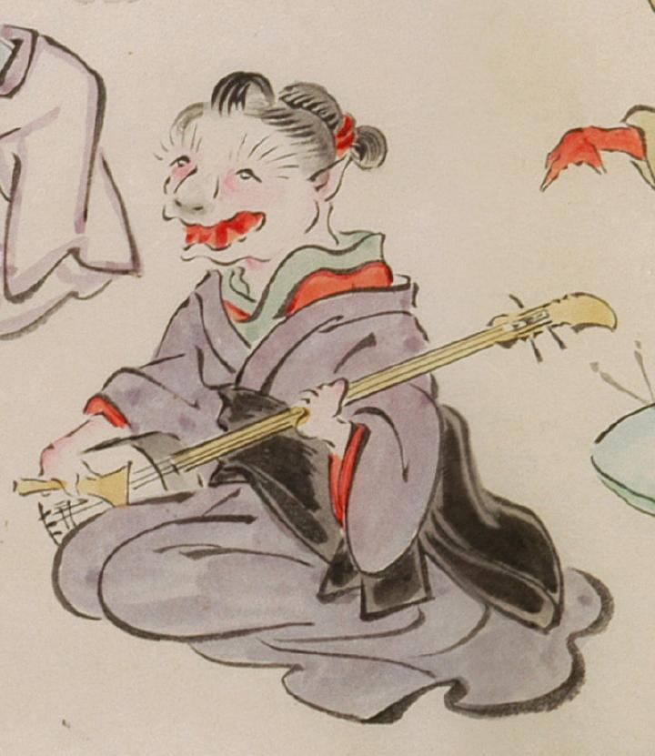

猫のような顔をした、三味線をひく化物。女と思われる。紫色の着物に黒色の帯を締めている。眉毛は逆立ち、耳は尖り、口は大きく裂けている。
出典：親書誌：U426_nichibunken_0053：化物婚礼絵巻；バケモノコンレイエマキ／日付：2006／資源識別子：U426_nichibunken_0053_0022_0001
Copyright (c)2010- International Research Center for Japanese Studies, Kyoto, Japan. All rights reserved.